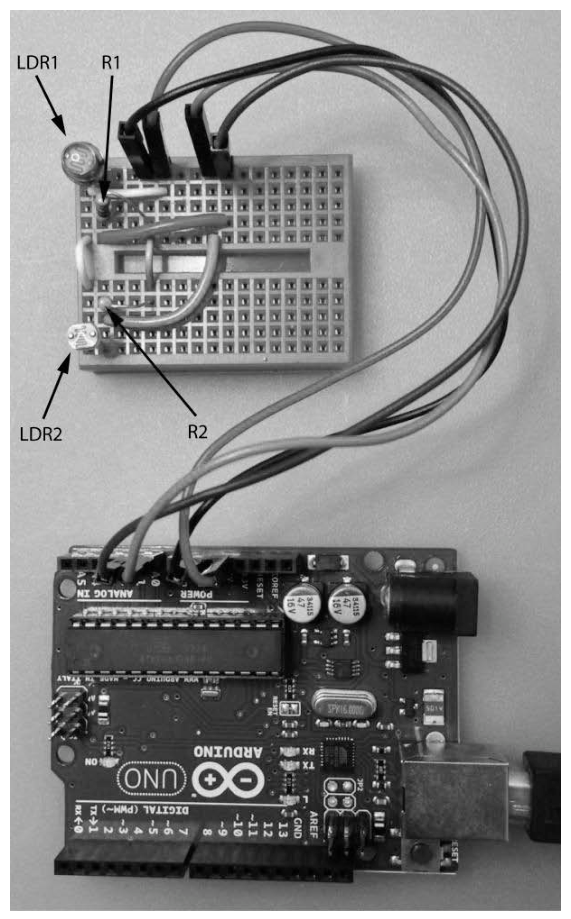
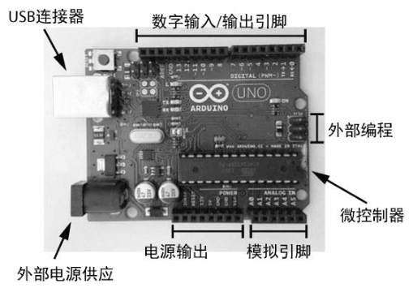
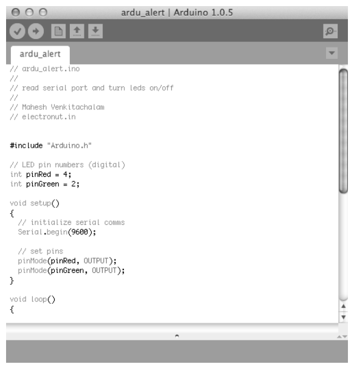
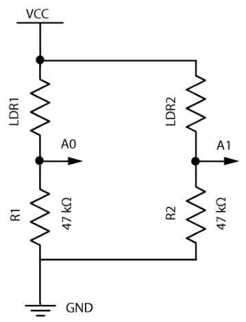
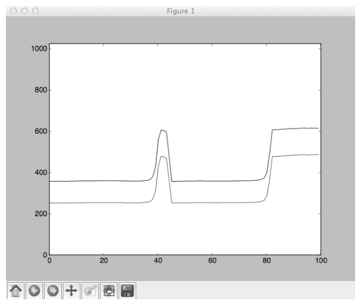

第 12 章 Arduino 简介#
本章解决：如何用一块 Arduino 开发板打通"光 → 电 → 图"的最小数据采集链路——LDR 光敏电路把光照变成电压，Arduino 每 50 毫秒读一次模拟引脚、经串口发给计算机；Python 端用 pySerial 收数据、matplotlib 画实时滚动曲线（像 EKG 监视器一样）。顺带认识 Arduino 平台本身：AVR 微控制器、引导加载程序、IDE 与它的生态系统。 承上启下：本章开启全书硬件篇（12–14 章），把前 11 章"纯软件"的 Python 技能接到物理世界。第 4 章做滚动缓冲的 deque 与第 5 章 Boids 驱动动画的 FuncAnimation 在此重逢，分别负责数据窗口与实时绘图；下一章继续玩 Arduino——用激光束的通断演奏"激光音乐秀"，第 14 章再登上树莓派做天气监控器。
Arduino 是一个简单的微控制器板卡，是基于可编程芯片的开源开发环境。所有版本的 Arduino 都包含计算机的标准组件：内存、处理器和输入/输出系统。本章在 Arduino 的帮助下进入微控制器的世界：先学 Arduino 平台的基础，用 Arduino 编程语言（C++ 的一个版本）写程序，让它从一个简单的光传感器电路收集数据、通过串行端口发给计算机；再用 pySerial 通过串口与 Arduino 交互，收集数据并用 matplotlib 实时绘图——新值输入时图形向右滚动，就像 EKG 监视器。电路设置如图 12-1。

12.0 本章导图#
12.1 Arduino#
Arduino 是围绕一类名为 Atmel AVR 的微控制器芯片构建的平台。市场上有许多不同尺寸和功能的 Arduino 板；图 12-2 突出了比较常见的 Arduino Uno 板卡的主要组件。板上的接头（header，引出的排针）允许访问微控制器的模拟和数字引脚——通过发送和接收数据，与其他电子设备通信。想更系统地学 Arduino 的电子与编程知识，作者推荐 John Boxall 的《Arduino Workshop》（No Starch Press，2013）。
注意：非官方板卡也能用
本书项目使用 Arduino Uno，但用非官方板卡应该也可以。这么做请先到 Arduino 网站（http://arduino.cc/）了解板卡之间的区别——例如一些板卡的引脚编号惯例与 Uno 不同。
Arduino Uno 上有：一个微控制器芯片、一个通用串行总线（USB）连接、一个外部电源插孔、若干数字输入/输出引脚、若干模拟引脚、可供外部电路使用的电源输出，还有直接对芯片编程的引脚。
| 板上组件 | 作用 |
|---|---|
| 微控制器芯片 | 板卡的大脑，执行上传的程序 |
| USB 连接 | 连接计算机：上传代码 + 串口通信 + 供电 |
| 外部电源插孔 | 不接电脑时的独立供电 |
| 数字输入/输出引脚 | 按设置作为输入或输出 |
| 模拟引脚 | 经模数转换器读取外部电压电平 |
| 电源输出 | 给外接电路供电（本章用的 5V 就从这里来） |
| 编程引脚（ICSP） | 绕过引导加载程序直接对芯片编程 |
Arduino 板卡包括一个引导加载程序（bootloader）——一个让你上传代码并在微控制器上运行的程序。如果没有引导加载程序，就要用**在线串行编程技术（ICSP）**与微控制器交互；Arduino 通过名为 ICSP 头的外部编程引脚支持了 ICSP。正因为 bootloader + USB 的组合，Arduino 才易于编程：用 USB 线把它连到计算机，用 Arduino 软件把代码上传到板卡即可。
板卡最重要的组件是 AVR 微控制器——它是一台单片计算机。Arduino Uno 上的 AVR 是 ATmega328 芯片，内部有中央处理单元（CPU）、定时器/计数器、模拟和数字引脚、存储器模块和时钟模块等：
- CPU 执行上传的程序；
- 定时器/计数器可在程序内创建周期性事件（例如每秒检查某个数字引脚的值）；
- 模拟引脚使用模数转换器（ADC）模块把输入的模拟信号转换为数字值；
- 数字引脚可以作为输入或输出，取决于如何设置。

12.2 Arduino 生态系统#
Arduino 处在一个生态系统的中心：这个生态系统把编程语言与集成开发环境（IDE）、支持性和创造性的社区以及大量外设结合了起来。
12.2.1 语言#
Arduino 编程语言是 C++ 的简化版本，起源于 Processing 和 Wiring 原型语言，设计目的是让不熟悉编程的人容易使用。为 Arduino 编写的程序称为草图（sketches）（Arduino 编程语言的更多信息见 http://arduino.cc/ ）。
12.2.2 IDE#
Arduino 自带一个简单的 IDE，可以在其中创建草图并上传到 Arduino（参见图 12-3）。IDE 还包括一个串行监视器（serial monitor）：让 Arduino 经串口向计算机发送信息，用它调试应用程序。此外 IDE 还带几个示例程序和一系列标准库，用于执行常见任务、与外部的外设板卡接口。

12.2.3 社区#
Arduino 有庞大的用户群，对项目有疑问可以向 Arduino 社区寻求帮助。社区已经开发了许多开源库，可以在项目中使用——用 Arduino 连接某个传感器模块遇到困难时，很可能有人已经解决了这个问题，并提供了一个库让你的生活更轻松。
12.2.4 外设#
与所有流行的平台一样，围绕 Arduino 平台建立了一个产业：功能扩展板（shields）——可以方便地叠装到 Arduino 上、以便访问传感器和其他电子元件的板卡；分线板（breakout boards）——可以方便地连接难以焊接的元件/电路；还有其他大量外设，其中许多能让项目更简单。SparkFun Electronics（https://www.sparkfun.com/）与 Adafruit Industries（http://www.adafruit.com/）是提供众多配套产品的两家公司。
12.3 所需模块#
了解了 Arduino 的基础知识，接下来对板卡编程、从光感测电路读取数据。除了 Arduino，还需要两个电阻和两个光敏电阻（LDR）：
| 器材 | 用途 |
|---|---|
| Arduino（Uno） | 读模拟引脚、经串口发数据 |
| 光敏电阻 ×2（LDR，又称 photoresistor） | 电阻随光照强度的增加而减小 |
| 电阻 ×2 | 减少通过电路的电流并降低电压 |
| 面包板 + 若干电线 | 免焊接搭建电路 |
| 万用表 | 测量电阻、检查连接 |
12.4 搭建感光电路#
感光电路由两个常规电阻和两个 LDR 组成，电路图见图 12-4（如何开始搭建电子电路的基本信息，见原书附录 B）。
先认一遍电路图里的记号：VCC 表示连接到 Arduino 的 5V 输出，它为电路供电；LDR1、LDR2 是两个光敏电阻；A0、A1 是 Arduino 的模拟引脚 0 和 1——模拟引脚允许微控制器从外部电路读取电压电平；R1、R2 是电阻；GND 是接地，接 Arduino 上的任何 GND 引脚。电路可以在面包板（带弹簧夹的塑料板，用于不焊接组装电路）上搭建，用少量电线连接，如图 12-1 所示。

原书笔误：图中电阻印成 47 kΩ
图 12-4 中 R1、R2 的标注是"47 kΩ"，但正文明确说用的是 4.7 kΩ 电阻，且只有按 4.7 kΩ 才能推出下文的 1.6V–4V 量程（按 47 kΩ 算，黑暗时 V0 ≈ 4.1V，量程只剩 4.1–4.9V）。照图搭建电路时以 4.7 kΩ 为准。
12.4.1 电路工作原理#
电路中，每个 LDR 和它下面的电阻构成一个电阻分压器（voltage divider）——用两个电阻将输入电压分为两部分的简单电路。这个设置意味着 A0 处的电压计算如下：
其中 \(R_1\) 是电阻的阻值，\(R_{\mathrm{LDR}}\) 是 LDR 的阻值，\(V\) 是电源电压，\(V_0\) 是 R1 两端的电压。
照在 LDR 上的光强度改变，它的电阻随之改变，因此它两端的电压也相应改变。电压（0 至 5 伏特之间）在 A0 处读取，并作为 10 位值发送给程序，范围为 [0, 1023]——电压范围被映射成 [0, 1023] 的整数。
R1、R2 的取值取决于选用的 LDR：用光照 LDR，电阻会降低，\(R_{\mathrm{LDR}}\) 减小，这意味着 \(V_0\) 增加，Arduino 从连接到该 LDR 的模拟引脚读入较高的值。确定阻值的办法：在不同光线条件下用万用表测量 LDR 的电阻，代入电压公式——目标是让使用场景的光照变化把电压"拉开"（向从 0V 到 5V 的方向良好变化）。
作者最终选了 4.7 kΩ 电阻做 R1 和 R2，因为他的 LDR 电阻从大约 10 kΩ（黑暗中）变化到 1 kΩ（明亮光线中）。把两端情况代入公式：
| 场景 | LDR 电阻 | \(V_0\) 的计算 | 结果 |
|---|---|---|---|
| 黑暗 | \(10\,\mathrm{k}\Omega\) | \(5 \times \frac{4.7}{10 + 4.7}\) | \(\approx 1.6\,\mathrm{V}\) |
| 明亮 | \(1\,\mathrm{k}\Omega\) | \(5 \times \frac{4.7}{1 + 4.7}\) | \(\approx 4.1\,\mathrm{V}\) |
即模拟输入需要覆盖 1.6V 至 4V 的电压范围。构建电路时，可以从 4.7 kΩ 电阻开始，并根据需要更改。
拓展：把电压换算成 ADC 读数
0–5V 映射到 [0, 1023]，所以 1.6V ≈ 327、4.1V ≈ 843——本章电路的读数理论上在 [327, 843] 之间游走，绘图时 y 轴上限设 1023 是留了余量。另外，电阻分压器是一切"电阻型"模拟传感器（热敏电阻、电位器、湿敏电阻……）接入 ADC 的标准接口电路，学会这一招就通吃一类传感器。
拓展：分压方向由谁接地决定
图 12-4 里 LDR 在上（接 VCC）、电阻在下（接 GND），\(V_0\) 取自 R1 两端——光越强、读数越高。若把 LDR 和电阻位置对调，方向就反过来。复现时先开串行监视器确认自己电路"光照—读数"的方向，再解读曲线（12.7 节的书图正好是个活例子）。
12.4.2 Arduino 程序#
下面是运行在 Arduino 上的代码，让它从电路读取信号，并通过串口发给计算机：
// ===== 书 12.4.2 节：Arduino sketch =====
#include "Arduino.h"
void setup()
{
// initialize serial communications
Serial.begin(9600); // ① 启用串口通信，波特率 9600 位/秒
}
void loop()
{
// read A0
int val1 = analogRead(0); // ② 读模拟引脚 0：10 位整数，范围 [0, 1023]
// read A1
int val2 = analogRead(1); // ③ 读模拟引脚 1
// print to serial
Serial.print(val1); // ④ 两个整数、空格分隔、换行结尾
Serial.print(" ");
Serial.print(val2);
Serial.print("\n");
// wait
delay(50); // ⑤ 停 50 毫秒，再进入下一轮循环
}
①行：setup() 方法里启用串口通信。setup() 仅在程序启动时调用，所以是放置所有初始化代码的好地方。这里把串口通信的**波特率（baud rate，速度，以位/秒为单位）**初始化为 9600——这是大多数设备的默认值，对本任务也足够快。
主要代码位于 loop() 方法中。②③行分别从模拟引脚 0、1 读取当前信号值（[0, 1023] 中的一个 10 位整数）；④行及随后几行用 Serial.print() 把值发送给计算机，格式化为两个整数、以空格分隔、后跟换行符；⑤行用 delay() 延缓指定的时间（这里是 50 毫秒），然后循环重复——这个值决定了 AVR 微控制器执行 loop() 的速度（本例即每秒约 20 组数据）。
拓展：9600 波特的带宽账
9600 波特 ≈ 每秒 9600 位；串口按 8N1 发送时每字节占 10 位，约 960 字节/秒。本章每行最长 1023 1023\n 共 11 字符，每秒 20 行 = 220 字节/秒——余量充足，不必调高波特率。
把程序上传到 Arduino：将板卡连接到计算机 → 启动 IDE、新建项目 → 在程序窗口输入代码 → 单击 Verify 编译代码（IDE 显示所有和语法相关的错误与警告）→ 一切正常则单击 Upload 把草图发送给 Arduino。上传成功后，从 Arduino 软件的工具菜单调出串行监视器，应看到类似这样的结果：
这些就是从模拟引脚 0 和 1 读取的模拟值，经 Arduino 的 USB 口串行发送给计算机——每行两个整数，正好对应 A0、A1 两路。
12.4.3 创建实时图表#
要在项目中实现滚动的实时图，需要使用一个 deque（双端队列），如第 4 章所述。deque 由 N 个值的数组构成，在任一端添加和删除值都能很快完成。新值出现时加入 deque，最老的值被弹出；以固定间隔绘制这些值，就会生成实时图——最新的数据总是在左侧添加。
拓展：与第 4 章的呼应
第 4 章的音频项目用 deque 缓冲声音样本，本章用它缓冲模拟读数——同一招：pop() 弹掉最老的、appendleft() 塞进最新的，窗口大小不变、内容向前滚动。现代写法还可以在构造时指定 deque([0.0]*maxLen, maxlen=maxLen)，超长自动丢弃；书里手动 pop/appendleft 的效果完全等价。
12.5 Python 代码#
Python 程序从串口读取数据（完整的项目代码见 12.6 节）。为了更好地组织代码，定义一个类 AnalogPlot，它保存要绘制的数据。
Python 3 适配：本章不实跑
本章是硬件章：需要 Arduino 与 LDR 电路实物，且本笔记的 Anaconda 环境未装 pyserial（import serial 会报 ModuleNotFoundError），代码按原书呈现、未实跑。要跑起来先 pip install pyserial（包名 pyserial、模块名 serial——别把自己的脚本命名为 serial.py，否则 import 到的是它自己）。
构造函数：
# ===== 书 12.5 节：AnalogPlot 构造函数 =====
class AnalogPlot:
# constructor
def __init__(self, strPort, maxLen):
# open serial port
self.ser = serial.Serial(strPort, 9600) # ① 打开串口，波特率 9600 与 Arduino 端一致
self.a0Vals = deque([0.0]*maxLen) # ② A0 读数的滚动缓冲，maxLen 个 0.0 起步
self.a1Vals = deque([0.0]*maxLen) # ③ A1 读数的滚动缓冲
self.maxLen = maxLen # ④ 窗口大小存入对象
①行：AnalogPlot 的构造函数利用 pySerial 库创建一个 Serial 对象，用它和 Arduino 的串口通信。Serial 构造函数的第一个参数是端口名称字符串，可以在 IDE 中通过 Tools ▸ Serial Port 找到——Windows 上类似 COM3，Linux 和 OS X 上类似 /dev/tty.usbmodem411。第二个参数是波特率，设为 9600 以匹配 Arduino 程序中设置的速率。②③行创建两个 deque 对象保存模拟值，用大小为 maxLen 的全零列表初始化——maxLen 是给定时间绘制的值的最大数量；④行把它保存在 AnalogPlot 对象中。
添加数据：
# ===== 书 12.5 节：add / addToDeq =====
# add data
def add(self, data):
assert(len(data) == 2) # 每行必须正好两个值
self.addToDeq(self.a0Vals, data[0]) # ① 第一个值进 A0 缓冲
self.addToDeq(self.a1Vals, data[1]) # ② 第二个值进 A1 缓冲
# add to deque; pop oldest value
def addToDeq(self, buf, val):
buf.pop() # ③ 从尾部删除最老的值
buf.appendleft(val) # ④ 把最新值加到头部
Arduino 每行仅发送两个模拟整数值。add() 方法在①②行把每个模拟引脚的数据值分别加进两个 deque；addToDeq() 方法在③④行先用 pop() 从 deque 尾部删除最老的值，再用 appendleft() 将最新的值添加到头部——绘制来自该 deque 的值时，最新的值始终显示在图形左侧。
更新绘图（动画每一步调用）：
# ===== 书 12.5 节：update =====
# update plot
def update(self, frameNum, a0, a1):
try:
line = self.ser.readline() # ① 读一行串口数据
data = [float(val) for val in line.split()] # ② 按空格切分并转浮点数
# print data
if(len(data) == 2): # ③ 两个值才处理
self.add(data) # ④ 加入滚动缓冲
a0.set_data(range(self.maxLen), self.a0Vals) # ⑤ 更新曲线 a0
a1.set_data(range(self.maxLen), self.a1Vals) # ⑥ 更新曲线 a1
except:
pass # ⑦ 坏数据直接忽略
return a0, a1
①行把一行串口数据读入为一个字符串；②行利用列表解析把值转换为浮点数并保存在列表中——split() 方法按空格分割字符串，把串口读入的 512 600\n 变成 [512, 600]。检查数据确实有两个值之后，③④行用 AnalogPlot 的 add() 方法把值添加到 deque；⑤⑥行利用 matplotlib 的 set_data() 方法用新值更新图形：x 值每次都是 range() 生成的 [0, …, maxLen]，y 值用更新过的 deque 对象填充。
所有这些代码都包含在 try 语句块中：发生异常就跳到⑦行的 pass，忽略读入的数据（pass 不做任何事情）。用 try 块是因为串口数据有时可能因电路接触不良而损坏——不希望程序仅因为串口发了一些坏值就崩溃。
Python 3 适配：readline() 返回 bytes
Python 2 时代 readline() 返回 str；Python 3 的 pyserial 返回 bytes，line.split() 得到的是 bytes 列表。float(b'512') 恰好能工作（int/float 接受 ASCII bytes，实测可用），所以书代码在 Python 3 上碰巧能跑；但更清晰的写法是先解码：data = [float(v) for v in line.decode().split()]。另外创建 Serial 时可加 timeout=1，让 readline() 不至于永久阻塞（Arduino 每 50ms 发一行，通常也用不上）。
准备退出时，关闭串口以释放所有系统资源：
# ===== 书 12.5 节：close =====
# clean up
def close(self):
# close serial
self.ser.flush() # 冲刷缓冲区
self.ser.close() # 关闭串口
在 main() 方法中，需要设置 matplotlib 动画（你可能还记得，第 5 章的 Boids 项目就用过这个 animation 类）：
# ===== 书 12.5 节：动画组装（main 内） =====
# set up animation
fig = plt.figure() # ① figure：装下所有绘图元素
ax = plt.axes(xlim=(0, maxLen), ylim=(0, 1023)) # ② x 限=样本数，y 限=模拟值上限 1023
a0, = ax.plot([], []) # ③ 空曲线 a0（回调里填数据）
a1, = ax.plot([], []) # ④ 空曲线 a1
anim = animation.FuncAnimation(fig, analogPlot.update, # ⑤ 每 20ms 调一次 update
fargs=(a0, a1), interval=20)
# show plot
plt.show() # ⑥ 启动动画（阻塞到关窗）
①行取得 matplotlib 的 figure 模块，其中包含所有绘图元素。②行访问 axes 模块设置图形的 x 和 y 限制：x 限制是样本数（0 到 maxLen），y 限制为 1023——模拟值范围的上限。③④行创建两个空白线对象（a0、a1），把它们传递给 animation 类设置回调，为每一条线提供坐标。⑤行传入每个动画步骤中要调用的 analogPlot.update() 方法来设置动画，同时指定调用参数（fargs）与以毫秒为单位的时间间隔（20）。⑥行调用 plt.show() 启动动画。
main() 里还用 argparse 模块支持命令行选项：
# ===== 书 12.5 节：argparse =====
parser = argparse.ArgumentParser(description="LDR serial")
parser.add_argument('--port', dest='port', required=True) # 串口名，必选
parser.add_argument('--N', dest='maxLen', required=False) # 一次绘制的点数，可选
args = parser.parse_args()
strPort = args.port
# plot parameters
maxLen = 100 # 默认 100 个样本
if args.maxLen:
maxLen = int(args.maxLen)
| 选项 | 作用 | 默认值 |
|---|---|---|
| --port | 接收数据的串口名称（Arduino IDE 的 Tools ▸ Serial Port 下找） | 无（required=True，必选） |
| --N | 一次绘制的点数（滚动窗口大小 maxLen） | 100 |
12.6 完整的 Python 代码#
完整程序 ldr.py 的组装顺序：import（serial、argparse、collections.deque、matplotlib.pyplot、matplotlib.animation）→ AnalogPlot 类（init / add / addToDeq / update / close，12.5 节已全部给出）→ main()（argparse 解析 → 打印串口名 → 创建 AnalogPlot(strPort, maxLen) → 动画组装 → plt.show() 阻塞直到关窗 → analogPlot.close() → 打印 exiting）→ if __name__ == '__main__' 调用 main()。main() 里仅剩的"胶水"如下：
# ===== 书 12.6 节：main() 剩余胶水（概括，完整清单见原书 12.6 节） =====
print('reading from serial port %s...' % strPort)
analogPlot = AnalogPlot(strPort, maxLen) # 创建绘图对象（打开串口）
print('plotting data...')
# ……动画组装见 12.5 节……
plt.show()
analogPlot.close() # 窗口关闭后释放串口
print('exiting.')
完整代码也可以从 GitHub 下载：https://github.com/electronut/pp/tree/master/arduino-ldr/ldr.py 。
注意 main() 把 FuncAnimation 的返回值存进了 anim 变量——这不是可有可无的风格问题，见"坑与陷阱"第 6 条。
12.7 运行程序#
测试流程：组装 LDR 电路 → 将 Arduino 连接到计算机 → 上传程序（12.4.2 节）→ 运行 Python 代码：
勘误：选项位置放错了
原书把 --port 放在脚本名前面——这样 Python 解释器会把它当成自己的选项，直接报 unknown option --port 并退出（实测退出码 2），argparse 根本没机会解析。选项必须放在脚本名之后：python3 ldr.py --port /dev/tty.usbmodem411。Windows 下串口名形如 COM3。
图 12-5 展示了程序的输出示例——LDR 暴露在光下然后被覆盖时生成的图。从中可以看出，LDR 的电阻变化时，Arduino 读取的模拟电压也随之变化：中心的高峰出现在迅速把手放到 LDR 上时，右侧的平坦部分出现在较慢移过手时。

两个 LDR 具有不同的电阻特性，这就是两条线不完全重合的原因——但可以看到，它们以相同的方式对光强的变化做出反应。
复现提示：遮光方向可能与书相反
按图 12-4 的接法（LDR 接 VCC、电阻接 GND），遮光应使读数下降；而书图 12-5 里遮光后读数反而上扬——更可能是作者实物中 LDR 接了 GND（分压方向反转），或手把光反射进了 LDR。动手复现时，先开串行监视器观察自己电路"遮光/照光"对应的读数方向，别默认和书一致。
12.8 小结#
这个项目介绍了微控制器和 Arduino 平台的世界：学了 Arduino 编程语法以及如何把程序上传到 Arduino；如何从 Arduino 引脚读取模拟值；如何搭建一个简单的 LDR 电路；如何通过串口从 Arduino 发送数据、用 Python 从计算机端读取数据；最后用实时滚动图和 matplotlib 让数据可视化——软件一端用到的积木（deque 滚动窗口、FuncAnimation 动画、argparse 命令行）都是前几章的老朋友。
12.9 实验#
三个进一步尝试的方向：
-
反转滚动方向。目前图形从左到右滚动：新值从左边进来时，较老的值向右移动。请反转滚动方向，使图形从右向左移动。做法就在
addToDeq()里把两端对调：buf.append(val)从尾部进新值、buf.popleft()从头部弹旧值——最新的值改为显示在图形右侧，绘图代码一行不用改。 -
均值滤波平滑数据。Arduino 代码定期读取模拟值并发送到串口，某些类型的传感器输入数据存在波动，常见做法是应用某种滤波平滑数据。请为 LDR 数据实现**移动平均（moving average）**策略：保存每个 LDR 读取的 N 个模拟值，把平均值定期发送到串口；同时把
loop()中的delay()减小（比如 5ms），以便更快地读取值。Arduino 端的骨架：
// ===== 书 12.9 实验 2：移动平均（骨架） =====
const int N = 16; // 平滑窗口大小，可调
int buf1[N]; int idx = 0; long sum1 = 0;
// loop() 内，替换原来的直接发送：
int v = analogRead(0);
sum1 += v - buf1[idx]; // 加新值、减最老值，维护滚动和
buf1[idx] = v; idx = (idx + 1) % N; // 环形缓冲推进
Serial.print(sum1 / N); // 发送均值
均值图比原始图更平滑吗？尝试不同的 N 值，看看会发生什么——N 越大越平滑，但对变化的响应也越迟钝。
- 双 LDR 手势检测。传感器电路中有两个 LDR。让它们保持良好的光源，从上面用手扫过——应该看到图形的急剧变化：一个 LDR 曲线在另一个之前变化，因为它首先被遮挡。可以用这些信息检测手的运动方向吗？这就是一个基本的手势检测项目。提示：两路曲线急剧变化发生的时间差，说明哪个 LDR 先被遮蔽，从而给出手的运动方向——实现上可以给每路设一个阈值，在 Python 端的
update()里记录哪一路先越过阈值。
坑与陷阱#
8 个容易踩的坑
- 图 12-4 的"47 kΩ"是印刷错误：正文与推导都是 4.7 kΩ；按 47 kΩ 算，黑暗时 V0 ≈ 4.1V，量程只剩 4.1–4.9V，与书给的 1.6V–4V 矛盾。按 4.7 kΩ 接线。
- --port 要放在脚本名后面：
python3 --port ... ldr.py会被解释器以unknown option --port拒收（实测退出码 2），argparse 没机会解析；正确写法python3 ldr.py --port ...。 - 串口一次只能被一个程序占用：开着 Arduino IDE 的串行监视器时，Python 端
serial.Serial(...)打不开同一端口（PermissionError / Access denied）。先关监视器再跑脚本，反之亦然。 - 两端波特率必须一致：
Serial.begin(9600)与serial.Serial(port, 9600)配对；不一致时 Python 端读到乱码或残缺行，set_data 就会喂进垃圾数据。 - 裸 except + pass 会吞掉真 bug：书里的 try/except 是为了容忍接触不良的坏数据，但调试期端口断开、参数写错也会被静默吞掉——排查问题时先把异常打印出来，程序稳定后再换回 pass。
- FuncAnimation 的返回值必须存变量：
anim = animation.FuncAnimation(...)若不保存返回值（比如把赋值"优化"掉），动画对象会被垃圾回收，窗口弹出但画面永远静止。 - deque 不设 maxlen 就必须手动 pop：只
appendleft()不pop()，缓冲无限增长，绘图越跑越卡；现代写法deque([0.0]*maxLen, maxlen=maxLen)之后只 appendleft，旧值自动挤掉（与第 4 章同款手法）。 - Python 3 的 readline() 返回 bytes：
split()后得到的是 bytes 列表；float(b'512')碰巧可用但别依赖，稳妥写line.decode().split()；顺带给 Serial 加timeout=1防阻塞。
速览#
- Arduino = 围绕 Atmel AVR 的开源微控制器平台；Uno 的芯片是 ATmega328——一台单片计算机：CPU、定时器/计数器、存储器、时钟、模拟/数字引脚。
- bootloader（引导加载程序）让"USB 上传代码"成为可能；没有它就得走 ICSP 外部编程引脚直接对芯片编程。
- 生态系统四件套：语言（简化 C++，程序叫草图 sketches，源自 Processing/Wiring）、IDE（串行监视器调试）、社区（开源库）、外设（SparkFun/Adafruit；扩展板 shields、分线板 breakout boards）。
- LDR 光照越强电阻越小（黑暗约 10 kΩ、亮光约 1 kΩ），与 4.7 kΩ 电阻构成分压器 \(V_0 = V \cdot \frac{R_1}{R_{\mathrm{LDR}}+R_1}\)，电压量程约 1.6V–4V。
- 模拟引脚经 ADC 把 0–5V 映射为 10 位整数 [0, 1023]；A0/A1 用
analogRead(0/1)读取。 - Arduino 程序骨架：
setup()里Serial.begin(9600)（只跑一次）；loop()里读两路 →Serial.print空格分隔 +\n→delay(50)（每秒约 20 组）。 - 上传三步：Verify 编译查错 → Upload 烧录 → 工具菜单开串行监视器，看
512 300这样的数据流。 - Python 端 AnalogPlot：
serial.Serial(port, 9600)开串口；两个 deque 滚动窗口（pop()弹旧 +appendleft()进新，最新值在图左）；update()里 readline → split → float → set_data，try/except 容忍坏数据；close()flush + close。 - main 组装：xlim=(0, maxLen)、ylim=(0, 1023)，FuncAnimation 每 20ms 调 update（返回值必须存变量）；argparse：--port 必需、--N 可选（默认 100）。运行命令：
python3 ldr.py --port <串口名>（选项在脚本名后）。 - 实验：
addToDeq()两端对调反转滚动方向；Arduino 端移动平均（减小 delay、调 N）平滑数据；双 LDR 曲线突变的时间差检测手势方向。
术语速查#
| 英文 | 中文 | 一句话 |
|---|---|---|
| Arduino | —— | 基于可编程芯片的开源微控制器板卡与开发环境 |
| microcontroller | 微控制器 | 单芯片上的计算机：CPU、存储器、I/O 一应俱全 |
| Atmel AVR / ATmega328 | —— | Arduino 围绕的芯片系列；Uno 用 ATmega328 |
| bootloader | 引导加载程序 | 让你上传代码并在微控制器上运行的程序 |
| ICSP | 在线串行编程技术 | 经 ICSP 头的外部编程引脚直接对芯片编程 |
| digital pin | 数字引脚 | 按设置可作为输入或输出 |
| analog pin | 模拟引脚 | 经 ADC 读取外部电路的电压电平 |
| ADC | 模数转换器 | 把 0–5V 模拟信号转成 10 位整数 [0, 1023] |
| sketch | 草图 | 为 Arduino 编写的程序 |
| Processing / Wiring | —— | Arduino 语言起源的两门原型语言 |
| IDE | 集成开发环境 | 编写草图、Verify/Upload，自带示例与标准库 |
| serial monitor | 串行监视器 | 查看 Arduino 串口输出的调试窗口 |
| shield | 功能扩展板 | 叠装到 Arduino 上，扩展传感器与其他元件 |
| breakout board | 分线板 | 方便连接难以焊接的元件/电路 |
| LDR / photoresistor | 光敏电阻 | 电阻随光照增强而减小（黑暗 10 kΩ → 亮光 1 kΩ） |
| breadboard | 面包板 | 带弹簧夹的塑料板，免焊接组装电路 |
| multimeter | 万用表 | 测电阻/电压，选电阻值、检查连接 |
| voltage divider | 电阻分压器 | 两电阻分压：\(V_0 = V \cdot \frac{R_1}{R_{\mathrm{LDR}}+R_1}\) |
| baud rate | 波特率 | 串口速度（位/秒）；本章两端都是 9600 |
| analogRead() | 读模拟引脚 | 返回 [0, 1023] 中的 10 位整数 |
| pySerial | —— | Python 串口库，import serial；安装名 pip install pyserial |
| deque | 双端队列 | 两端增删都快；本章做滚动窗口（同第 4 章） |
| FuncAnimation | 动画类 | matplotlib 定时回调 update() 刷新绘图（同第 5 章） |
| set_data() | 更新曲线数据 | 逐帧重设 Line2D 的 x/y 坐标 |
| moving average | 移动平均 | 最近 N 个读数的均值，平滑波动数据（实验 2） |